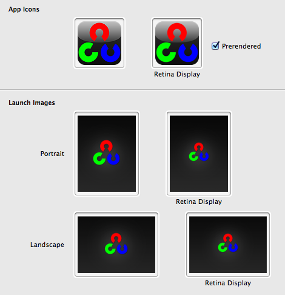
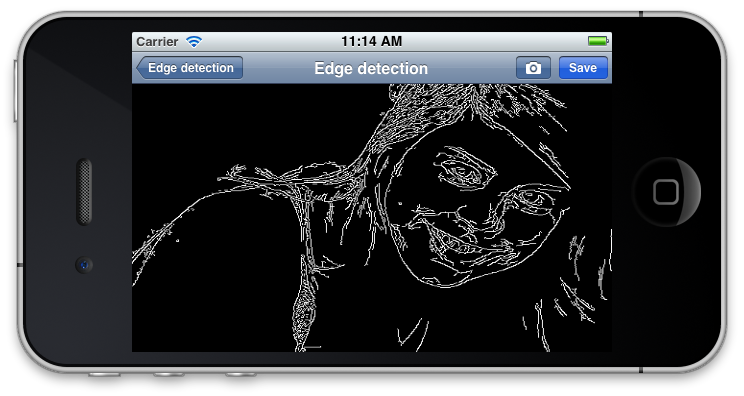

This is the fourth part of the OpenCV Tutorial. In this part the solution of the annoying iOS video capture orientation bug will be described. Of course that’s not all. There are some new features - we will add processing of saved photos from your photo album. Also to introduce minor interface improvements and I’ll show you how to disable unsupported API like video capture in your app and run in on iOS Simulator.
Startup images
 First of all, i would like to say a great thanks for my friend who made nice startup images for this project. I’m really loving them, good graphics make application looks like a pro. Thanks Eugene. By the way, if you looking for free-lance graphic designer - feel free to contact him anytime. So i got a bunch of startup images. With regards to iOS guidelines, to fulfill all possible cases you need 6 different images - two for iPhone (for old one and for retina display) and four for iPad family (in portrait and landscape orientation for both retina and non-retina displays). Assigning them to XCode project was a trivial task - just drag and drop them to project options:

Device, Interface and Video orientation
In the part 3 we created video capture class that use AVFoundation to get raw data from camera capture input. To present our images we introduced GLESImageView class. The motivation was to have fast rendering of bitmaps. But we experienced a problem with video orientation. If we were using AVVideoCapturePreviewLayer then iOS API take care about video/device/interface orientation by itself. But since our choice to use low-level capture API it’s our headache. Fortunately, we have to do only one thing - apply the correct rotation for our texture with image with regards to the interface orientation. There is a slight difference between device orientation and interface orientation. The device orientation refers to physical orientation of your device in the world, while interface orientation refers to orientation of UI controls on the screen. To get the current interface orientation you will need an instance of UIViewController object that holds our GLESImageView. We can access interface orientation like this:
UIInterfaceOrientation uiOrientation = [viewController interfaceOrientation];
To follow SRP we put orientation handling code inside to GLESImageView class. To access the parent view controller from any view you can use following snippet code that i found somewhere on stackoverflow.com: GLESImageView.mm
- (UIViewController *)viewController
{
UIResponder *responder = self;
while (![responder isKindOfClass:[UIViewController class]])
{
responder = [responder nextResponder];
if (nil == responder)
{
break;
}
}
return (UIViewController *)responder;
}
Camera frame orientation
There is another one kind of orientation - AVCaptureVideoOrientation type. This enum defines the physical orientation of the images captured with particular capture device. The video orientation differs for front and rear cameras. Here is a proof link - Technical Q&A QA1744.
The iPod touch, iPhone 4 and iPad 2 front facing camera is mounted AVCaptureVideoOrientationLandscapeLeft, and the back-facing camera is mounted AVCaptureVideoOrientationLandscapeRight.
Also i draw your attention that AVCaptureVideoDataOutput does not support setting video orientation using API:
Currently, the capture outputs for a movie file (AVCaptureMovieFileOutput) and still image (AVCaptureStillImageOutput) support setting the orientation, but the data output for processing video frames (AVCaptureVideoDataOutput) does not.
Well, it’s not so bat, actually. To handle different orientation of rear and front camera we can use simple flip operation. This brings AVCaptureVideoOrientationLandscapeLeft to AVCaptureVideoOrientationLandscapeRight. We’ll use this video orientation as a standard orientation: VideoSource.mm
- (void)captureOutput:(AVCaptureOutput *)captureOutput
didOutputSampleBuffer:(CMSampleBufferRef)sampleBuffer
fromConnection:(AVCaptureConnection *)connection
{
...
cv::Mat frame(height, width, CV_8UC4, (void*)baseAddress, stride);
if ([self videoOrientation] == AVCaptureVideoOrientationLandscapeLeft)
{
cv::flip(frame, frame, 0);
}
...
}
There is four possible interface orientations - Portrait, PortraitUpsideDown, LandscapeLeft, LandscapeRight. So we can define four sets of texture coordinates that does correct visualization of our bitmap. At every frame we choose right set of texture coordinates with regards to interface orientation. Here is a code that i use: GLESImageView.mm
- (void)drawFrame:(const cv::Mat&) bgraFrame
{
...
GLfloat * textureVertices;
static GLfloat textureVerticesPortrait[] =
{
1, 1, 1, 0,
0, 1, 0, 0
};
static GLfloat textureVerticesPortraitUpsideDown[] =
{
0, 0, 0, 1,
1, 0, 1, 1
};
static GLfloat textureVerticesLandscapeLeft[] =
{
1, 0, 0, 0,
1, 1, 0, 1
};
static GLfloat textureVerticesLandscapeRight[] =
{
0, 1, 1, 1,
0, 0, 1, 0
};
switch (uiOrientation)
{
case UIInterfaceOrientationPortrait:
textureVertices = textureVerticesPortrait;
break;
case UIInterfaceOrientationPortraitUpsideDown:
textureVertices = textureVerticesPortraitUpsideDown;
break;
case UIInterfaceOrientationLandscapeLeft:
textureVertices = textureVerticesLandscapeLeft;
break;
case UIInterfaceOrientationLandscapeRight:
default:
textureVertices = textureVerticesLandscapeRight;
break;
};
...
}
Using this we select correct texture coordinates. The rest of drawing code left without changes. Great, now it seems that video looks correct at every orientation. Cool! Let’s move on.
Processing saved photos
Although processing video frames in real-time is awesome by itself, i though that adding a possibility to process a saved picture is also worth to be implemented. All the more so it’s easier to implement than video processing. As usual, we start from creating a new ImageViewController class. Our view will contains UIImageView control to present processed result on the View. Like the VideoViewController, our class also requires a SampleBase object and input image to process.

This is how it looks. Two buttons in the top right corner is action buttons - the “Save” button puts a processed image to a saved photos album, the second button with camera picture - allows you to select another one image for processing.
ImageViewController.h
@interface ImageViewController : UIViewController
- (void) setSample:(SampleBase*) sample;
- (void) setImage:(UIImage*) image;
@property (weak, nonatomic) IBOutlet UIImageView *imageView;
@end
ImageViewController.mm
- (void)viewDidLoad
{
[super viewDidLoad];
// Do any additional setup after loading the view.
self.navigationItem.rightBarButtonItems = [NSArray arrayWithObjects: